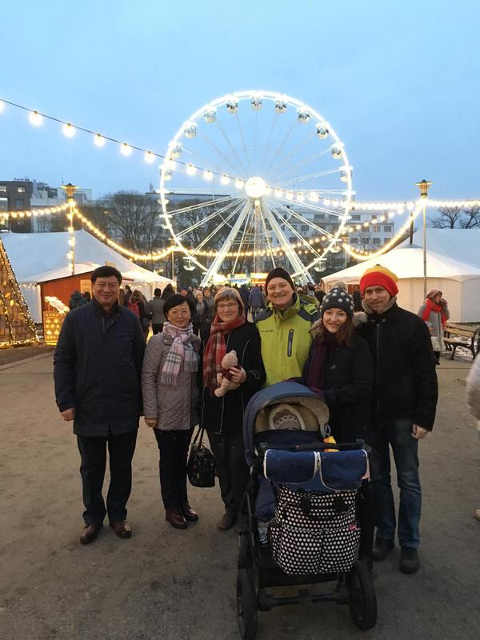
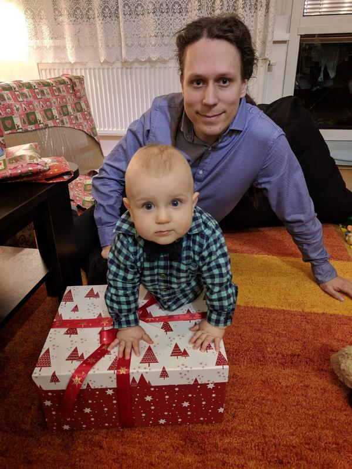
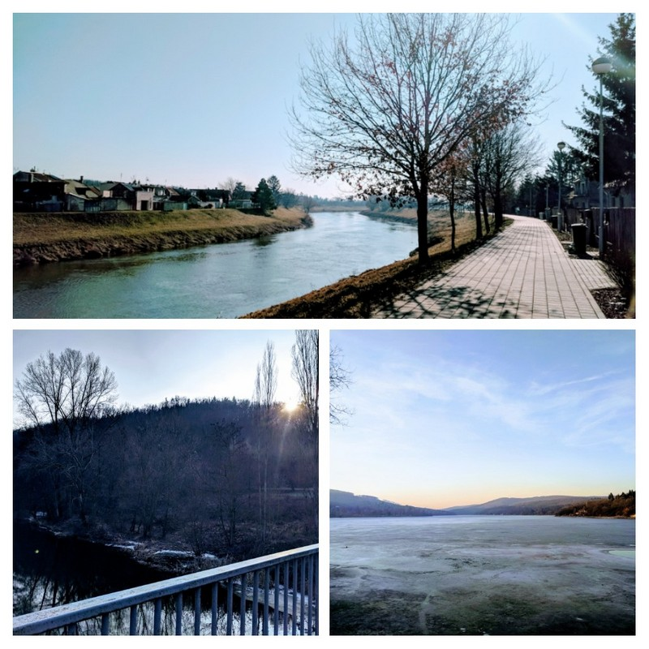
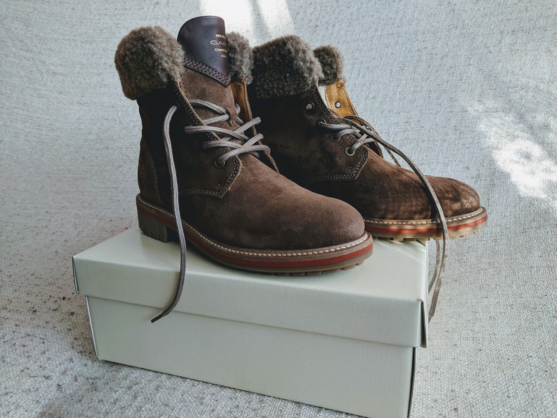

Tahle zima byla pro nás všechny dost náročným obdobím - hlavně z toho důvodu, že nás zastihla ve fázi, kdy Olík začal aktivně lozit, stavět se, zkrátka objevovat svět na vlastní pěst. Oč snadnější by bylo trávit s ním teď celé dny venku, než ho doma věčně odhánět od nebezpečných předmětů a situací! Do toho moje otravná angína jen pár dnů před Vánocemi a tradiční lednová deprese… Ale aby se neřeklo, přineslo nám tohle temné období i pár highlightů, které stojí za zaznamenání :-)

Především jsme do naší rodiny oficiálně přivítali Jennifer spolu s jejími rodiči, kteří v prosinci vůbec poprvé navštívili Českou republiku. Strávili jsme spolu jen pár dnů, ale věřím, že si místní předvánoční atmosféru užili a jednou se za nimi třeba vypravíme do Číny :-)

Naše první Vánoce ve třech. Nebyly ve všem perfektní, ale byli jsme spolu - já i mí dva nejmilejší dárečci :-)

Samozřejmě jsem i zimě navzdory vyrážela s Olím na naše oblíbené dlouhé procházky…

…které byly o to radostnější, když jsem v povánočních výprodejích ulovila nejteplejší boty svého života! Jak by řekl táta Šebek: “Ty jsou, co?” :D